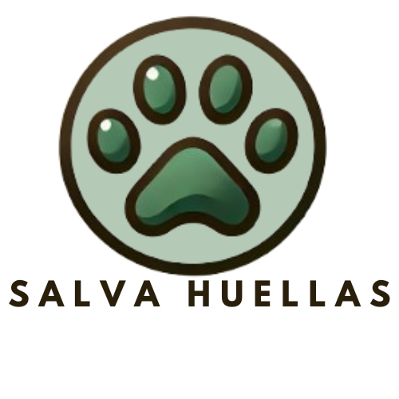

Salva Huellas
Inicio
Ayudanos
Acerca
Contacto

Ayudar Animal Vulnerable
Ubicacion
Tipo de Vulnerabilidad:
Seleccione...
Abandono
Enfermedad
Maltrato
Tipo de Ayuda Requerida:
Seleccione...
Alimentos
Adopción
Hogar de Paso
Tipo de animal:
Enviar Reporte